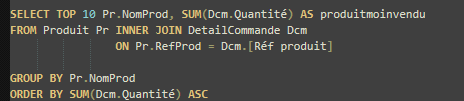
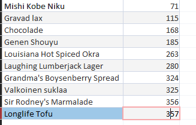

Énoncé : Quels sont les 10 produits les moins vendus en termes de quantité totale ?
Objectif : Identifier les références à très faible rotation (stocks dormants) pour mettre en place une stratégie de déstockage.
Cette analyse permet à KDou d'identifier précisément ses stocks dormants. Repérer ces produits est stratégique : la direction pourra ainsi appliquer des remises ciblées pour écouler les invendus. Cela libérera un espace de stockage coûteux et réinjectera de la trésorerie pour financer d'autres références plus rentables.
Requête SQL :

Résultat :
